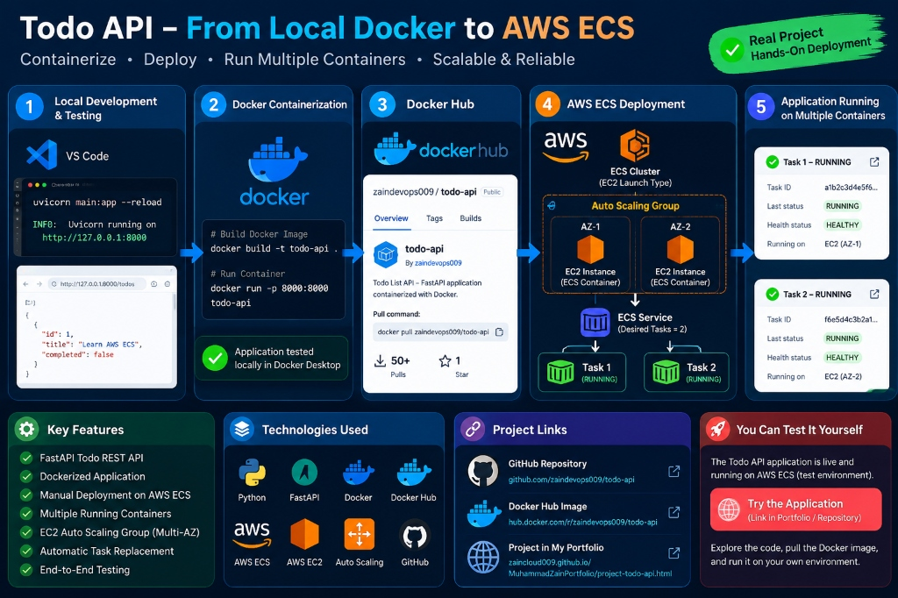

Dockerized FastAPI Todo-List Application Deployment on AWS ECS
From local Docker containerization and automated testing to production multi-container orchestration on AWS ECS using EC2-based self-managed capacity and Auto Scaling across multiple Availability Zones.

Project Overview & DevOps Mindset
As part of my Cloud & DevOps Engineering journey, I built a production-focused To-Do List REST API using FastAPI. While building functional application endpoints is essential, this project was architected around a fundamental DevOps principle:
From initial source code to automated unit test execution, lightweight multi-stage Docker packaging, non-root Linux permissions, and continuous smoke testing in GitHub Actions, this project implements a complete modern software delivery lifecycle.
FastAPI + Pydantic: High-Performance REST API
The backend was crafted using FastAPI and Pydantic v2 to achieve sub-millisecond serialization latency, strict type validation, and automated API documentation:
- Data Modeling & Validation: Pydantic models define strict schema contracts for request bodies (title, description, completion status, due dates), automatically rejecting malformed JSON payloads with descriptive 422 HTTP responses.
- Interactive Swagger / OpenAPI: FastAPI auto-generates live interactive documentation endpoints at
/docs(Swagger UI) and/redoc, enabling frictionless API discovery and manual testing. - Clean Architecture: Separated business logic, route controllers, and error handling layers to ensure high modularity and maintainability.
Hardened Docker Containerization
Containers are often built with oversized base images or run under root privileges by default, creating severe security vulnerabilities in production. To eliminate these risks, the container was engineered with industry best practices:
- Lean Base Image (
python:3.12-slim): Dramatically minimizes image size, cuts build and pull times, and reduces Common Vulnerabilities and Exposures (CVEs) by excluding unnecessary build tools and packages. - Container Security (Non-Root User): Configured a dedicated system user (
appuser, UID 1001) adhering strictly to the Principle of Least Privilege. Even in the event of an application exploit, the attacker is confined to an unprivileged sandbox without root access to the host kernel. - Zero-Dependency Health Checks: Traditional Docker health checks often install
curlorwget, adding bloat and attack surface. Instead, this image utilizes Python's built-inurllib.requeststandard library to verify endpoint responsiveness natively.
FROM python:3.12-slim
# Create non-root system user (Principle of Least Privilege)
RUN useradd -u 1001 -m appuser
WORKDIR /app
# Install dependencies with pip cache disabled to minimize layers
COPY requirements.txt .
RUN pip install --no-cache-dir -r requirements.txt
# Copy application files and grant ownership to non-root user
COPY --chown=appuser:appuser . .
USER appuser
# Native Python urllib health check without extra packages
HEALTHCHECK --interval=30s --timeout=3s --retries=3 \
CMD python -c "import urllib.request; urllib.request.urlopen('http://localhost:8000/health')" || exit 1
EXPOSE 8000
CMD ["uvicorn", "main:app", "--host", "0.0.0.0", "--port", "8000"]Automated GitHub Actions CI/CD Pipeline
Every commit pushed to GitHub and every pull request triggers an automated continuous integration and delivery pipeline defined in .github/workflows/ci.yml:
- Automated Testing with pytest (13 Unit Tests): Executes a test suite containing 13 unit tests covering CRUD endpoints, error handlers, query filters, and data validations with zero tolerance for regressions.
- Docker Build with Layer Caching: Uses
docker/setup-buildx-actionand GitHub Actions cache backends (type=gha) to accelerate image assembly by reusing unchanged layers. - Ephemeral Container Spin-Up: Starts a temporary live instance of the built Docker container inside the GitHub runner environment.
- Automated Smoke Testing: Executes an HTTP probe against the live container to verify that uvicorn started properly, routes respond with
200 OK, and no runtime missing modules crash the process.
name: CI/CD Pipeline
on:
push:
branches: [ main ]
pull_request:
branches: [ main ]
jobs:
test-and-build:
runs-on: ubuntu-latest
steps:
- name: Checkout Repository
uses: actions/checkout@v4
- name: Set up Python 3.12
uses: actions/setup-python@v5
with:
python-version: "3.12"
cache: "pip"
- name: Install Dependencies & pytest
run: |
python -m pip install --upgrade pip
pip install -r requirements.txt
pip install pytest httpx
- name: Run 13 Unit Tests
run: pytest -v --tb=short
- name: Set up Docker Buildx
uses: docker/setup-buildx-action@v3
- name: Build Docker Image with Caching
uses: docker/build-push-action@v5
with:
context: .
load: true
tags: todo-api:latest
cache-from: type=gha
cache-to: type=gha,mode=max
- name: Container Smoke Test
run: |
docker run -d -p 8000:8000 --name test-api todo-api:latest
sleep 3
python -c "import urllib.request; res = urllib.request.urlopen('http://localhost:8000/health'); assert res.status == 200"
echo "Smoke test passed successfully!"
docker stop test-apiFrictionless Local Development with Docker Compose
To eliminate the classic "it works on my machine" dilemma, a comprehensive docker-compose.yml setup was created for team members and contributors:
- Live Volume Mounting: Mounts local application code directly into the container filesystem (
.:/app), enabling instant hot-reloading on code edits without rebuilding the image. - Environment Isolation: Encapsulates runtime dependencies so developers can test the exact production Python version and packages without polluting their host machines.
Engineering Takeaways & Future Improvements
This hands-on project solidified key architectural principles for developing modern cloud workloads:
- Shift Security Left: Implementing non-root containers and least-privilege principles during development eliminates security remediation bottlenecks in production.
- Fail Fast with Smoke Tests: Merely checking whether a Docker build exits with status 0 is insufficient; spinning up the image and pinging real endpoints catches runtime configuration mismatches before deployment.
- Native Tooling Over Extra Bloat: Leveraging Python's standard library for health checks prevents unnecessary dependencies and reduces the surface area for vulnerabilities.
Project Overview: AWS ECS Cloud Deployment
Designed, containerized, tested, and manually deployed a FastAPI Todo REST API from a local development environment to AWS ECS using EC2-based self-managed infrastructure.
The project demonstrates a complete container deployment workflow, from building and testing a Docker image locally to running multiple application tasks on AWS ECS.
Key Work Completed
- Production Dockerfile: Built a production-oriented Dockerfile for the FastAPI application adhering to least privilege and lean base images.
- Local Testing with Docker Desktop: Built and tested the Docker image locally using Docker Desktop, running and validating the application inside Docker containers.
- Container Registry Distribution: Pushed the tested Docker image to Docker Hub (zaindevops009/todo-api).
- AWS ECS Cluster Creation: Created an AWS ECS Cluster using EC2 / self-managed capacity.
- Multi-AZ Auto Scaling Group: Configured an Auto Scaling Group with 2 EC2 instances across multiple Availability Zones (AZ-1 & AZ-2) for high availability and automatic task replacement.
- ECS Task Definition: Created an ECS Task Definition configured using the Docker Hub container image.
- ECS Service with 2 Desired Tasks: Created an ECS Service with 2 desired tasks to deploy the application across multiple concurrently running containers.
- Health & Availability Verification: Verified ECS task health, container status (RUNNING & HEALTHY), and application availability.
- Manual Deployment & Troubleshooting: Performed manual deployment, security group alignment, and troubleshooting throughout the process.
Architecture Flow
The complete container deployment pipeline from local workstation code to multi-container AWS ECS orchestration:
FastAPI endpoints and Pydantic schemas built and developed in VS Code.
Hardened container instructions built into lightweight Docker image.
Local container verification on port 8000 (docker run -p 8000:8000).
Image pushed to Docker Hub (zaindevops009/todo-api) for cloud pulling.
Self-managed EC2 capacity managed by Auto Scaling Group across multiple AZs.
ECS Service maintaining 2 desired tasks across multiple active containers.
Technologies Used
Project Links
Explore and pull the verified Docker container image directly:
hub.docker.com/r/zaindevops009/todo-api ↗Source code, tests, Dockerfile, and GitHub Actions CI/CD workflows:
github.com/zaindevops009/todo-api ↗Outcome
More projects to explore
Enterprise DevOps Deployment: Terraform & Jenkins
Modular AWS infrastructure with ALB, RDS, Jenkins pipelines, and automated rollbacks.
Laravel 12 Cloud Architecture: AWS ECS & ALB
Zero-downtime containerized deployment with Dynamic Port Mapping, ALB, RDS SSL, and GitHub Actions.
Linux Administration & Bash Automation
Automated Amazon Linux maintenance, database backups, log archiving, and scheduled S3 sync.